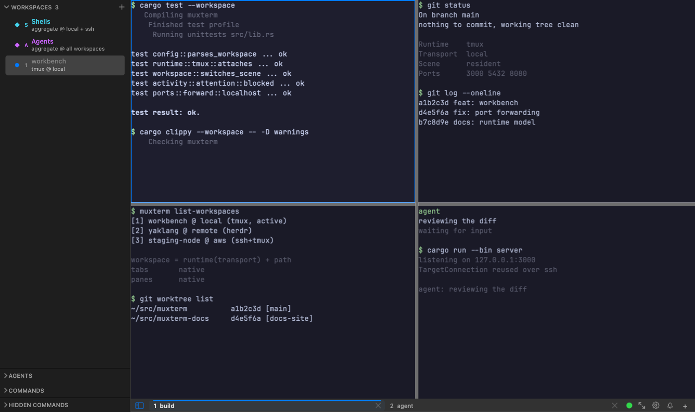
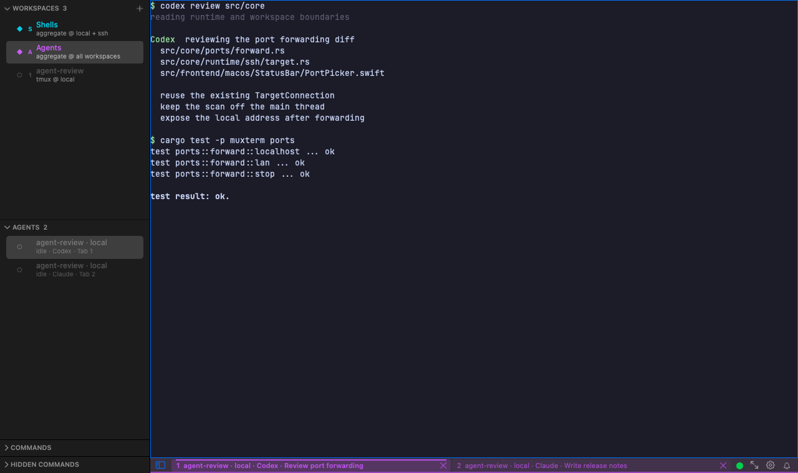
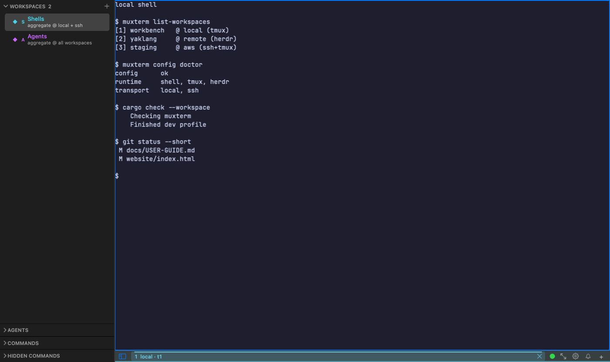

tmux and Herdr become workspaces.
tmux, Herdr and local shells in one native workbench.
$ curl -L -o muxterm.dmg https://github.com/wlingze/muxterm/releases/latest/download/muxterm-macos-arm64.dmg
Checking muxterm Finished dev profile $ muxterm list-workspaces [1] muxterm @ local (tmux) [2] yaklang @ remote (herdr) [3] staging-node @ aws (ssh+tmux)
On branch main nothing to commit, working tree clean Runtime: tmux Transport: local Scene: resident
mock sessions



A workbench, not a wrapper
Each tmux session or Herdr workspace enters the pool as a first-class workspace.
Frontend (macOS / Linux / TUI / CLI)
└── C FFI + ffi_client
└── Muxterm Root
├── ConfigStore (config.toml)
├── Catalog (WorkspaceSpec resolver)
├── Projects (worktree provenance)
├── Activity (agents, attention)
└── WorkspacePool
└── Workspace = Runtime(Transport) + path
└── Tab to Pane
Control lane
Native tabs and panes follow every runtime.
Render-data lane
Raw PTY bytes go straight to native surfaces.
Activity lane
Agent state and attention stay in the workspace.
tmux and Herdr, without the wrapper
One workspace per session, local or over SSH.
| Runtime | Transport | Becomes | Keeps |
|---|---|---|---|
shell |
local / ssh | a workspace | process lifetime |
tmux |
local / ssh | a workspace per session | detach and reattach |
herdr |
local / ssh | a workspace per Herdr workspace | native worktrees |
Ports find you
macOS SSH workspaces scan listening ports. Forward one to localhost, or expose it on the LAN with an explicit toggle.
Built for the daily workbench
Projects, worktrees, agents, one config.
QuickConnect palette
Filter projects, worktrees, and SSH hosts with one key.
Projects and worktrees
Open each checkout as its own workspace, grouped by project.
Attention lane
See blocked agents and finished builds without hunting panes.
One config contract
Fonts, keys, projects and templates in one config.toml.
Download packages
Desktop bundles and binaries with checksums.
macOS ARM64
Apple Silicon, macOS 13+.
Linux x86_64 GTK4
GTK4 bundle with vte4.
Cross-platform TUI
Pure ratatui interface.
Build from source
Rust 1.97.1.